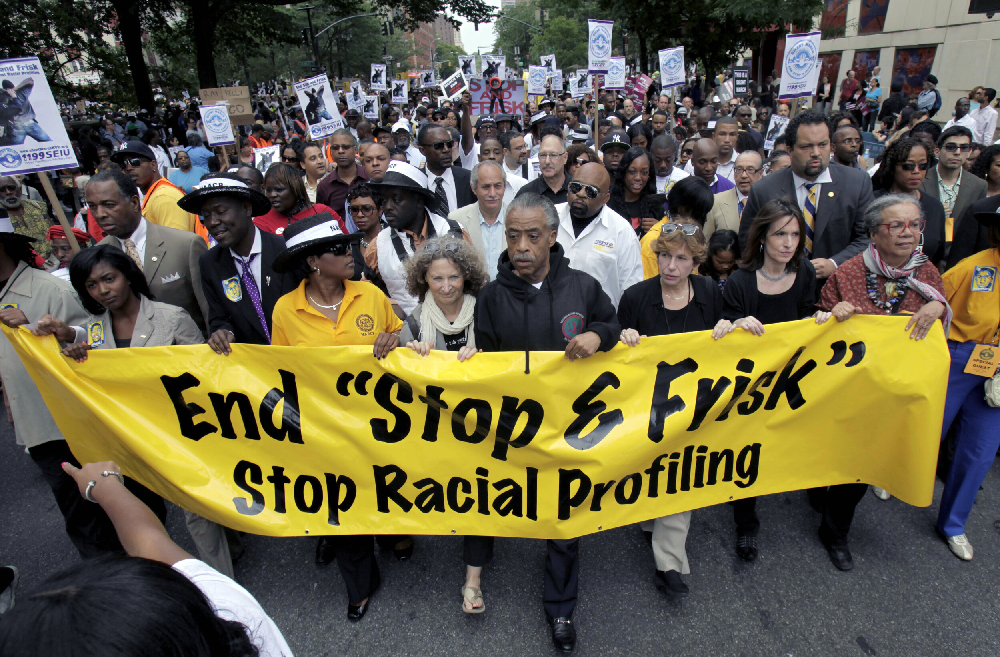

In our world of ever-evolving technology like artificial intelligence, automation, and algorithms, everything under the sun, from food service to rocket building, is becoming more and more digitized and automatic. But with more power, comes more responsibility (or so they claim). With the current political atmosphere in our society today, many social issues concerning racial discrimination and prejudices have been revealed, even including AI.
It’s a (somewhat) good thing that AI is unfortunately helping these issues come to light and detect unfounded racial biases within its responses. But something a lot of people aren’t talking about is how these biases are being introduced. Why is the data we feed to it helping perpetuate them in the first place?
One way that artificial intelligence is contributing to racial discrimination is through something that many people may not be aware about: predictive policing. Predictive policing algorithms are supposed to help law enforcement determine which locations are most vulnerable to crime, and which populations are susceptible to committing crimes in the future. These algorithms, however, do not take into account the fact that law enforcement themselves have skewed the data due to racial discrimination.
Historically, the over policing of poor and minority neighborhoods has resulted in them being overrepresented in data records that record police arrests and highest locations of crime. When AI predicts that crime is most likely to happen in these neighborhoods, it causes even more over policing in the same areas.
Again, it’s a good thing that people are becoming more aware of how racial biases affect our perception of certain minorities and underprivileged communities. But we should never forget the discrimination that they faced even before AI made them more visible. One of the biggest examples of this relies on the exoneration rates and wrongful convictions of people of color, especially Black people.
Exoneration is when someone who is charged with a crime, or even jailed for it, has their verdict reversed and is proven to be innocent. Even though Black people make up just 13% of the US population, they make up around 40% of all incarcerated people in the nation. Furthermore, since 1989, out of the 3,300 people who were exonerated from their crimes, approximately 53% of them were Black, making them seven times more likely to be wrongfully convicted of murder than white people, and eight times more likely compared to white people in the case of sexual assault. Over policing plays a large part in these numbers, and also results in the AI biases that we recognize today.
This problem persists at multiple stages after the police as well. During the initial investigations, cases involving Black exonerees were found to be 50% more likely to have been faulty due to police misconduct, and witnesses were also more likely to misidentify suspects, especially those of another race, than they did with cases involving white suspects. (This was a bigger problem for sexual assault convictions). When suspects are being charged, prosecutors are more likely to offer to plead people of color out if they did jail time, and if they are found guilty, they are usually charged with more severe crimes and punishments compared to their white counterparts. At trial, when the jury is composed of people of a different race (typically white), Black suspects are more likely to be found guilty.
Drug charges have possibly the largest racial disparity between Black people and white people. Black people make up 69% of drug exonerees compared to white people, who share 16%. This is undoubtedly the consequence of police officers who target Black individuals to stop and search, yielding biased outcomes of who is more likely to be carrying drugs on their person. In states where marijuana is not legalized, Black and Latino people tend to receive harsh sentences even if they were carrying very low amounts of the substance.
We can look at examples of discriminatory searches through New York’s infamous Stop and Frisk, which was found to be unconstitutional in 2013. The law, which was found to have violated the Fourth Amendment that states police cannot engage in “unreasonable searches and seizures,” allowed the NYPD to stop and search any citizen they believed were likely to commit a crime without consent. The policy was widely criticized as many thought that it led to the disproportionate searches of Black and Latino civilians, who together made up approximately 50% of the population in 2013. From 1999 to 2012, both groups made up an overwhelming 80% of searches conducted under Stop and Frisk.
Although various efforts have been made in recent years to completely stop these issues, it is simply not enough, and we should not settle for anything less than complete correction. As AI continues to shape our future as a society, we must ensure that it does not perpetuate our past mistakes. Only then can we even think about working towards a fairer, more equitable society—one where technology works for everyone, rather than against the most vulnerable.